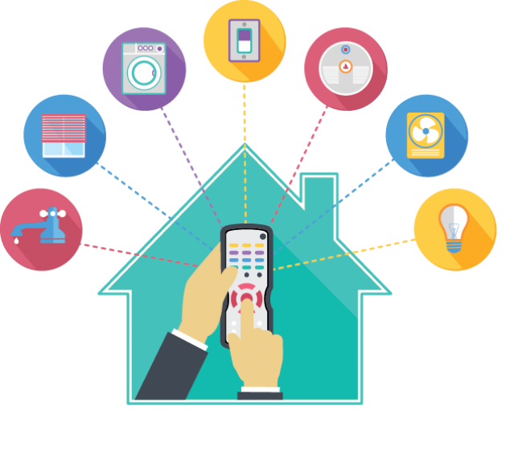

Smart Deal
Properties
- ONE-TOUCH ACTIONS Switch to your favorite channels and between gaming, Netflix®, Apple TV®, and virtually
any device.
- CUSTOM ACTIVITIES Create unlimited one-touch or time-triggered activities that group devices into custom
experiences.
- UNIVERSAL CONTROL Combine up to 15 remotes and countless apps into one elegant, easy-to-use, universal
controller.
- REMOTE CONTROL Set recordings, turn on the lights, or activate any of your devices while you’re not home.
- EASY SET-UP Download the Harmony App. Auto-scan for devices. Create custom Activities and Favorites.
- ASSISTANT FOR VOICE CONTROL Use Amazon Alexa or Google Home to turn on your TV, select favorite channels
or trigger Harmony Activities.